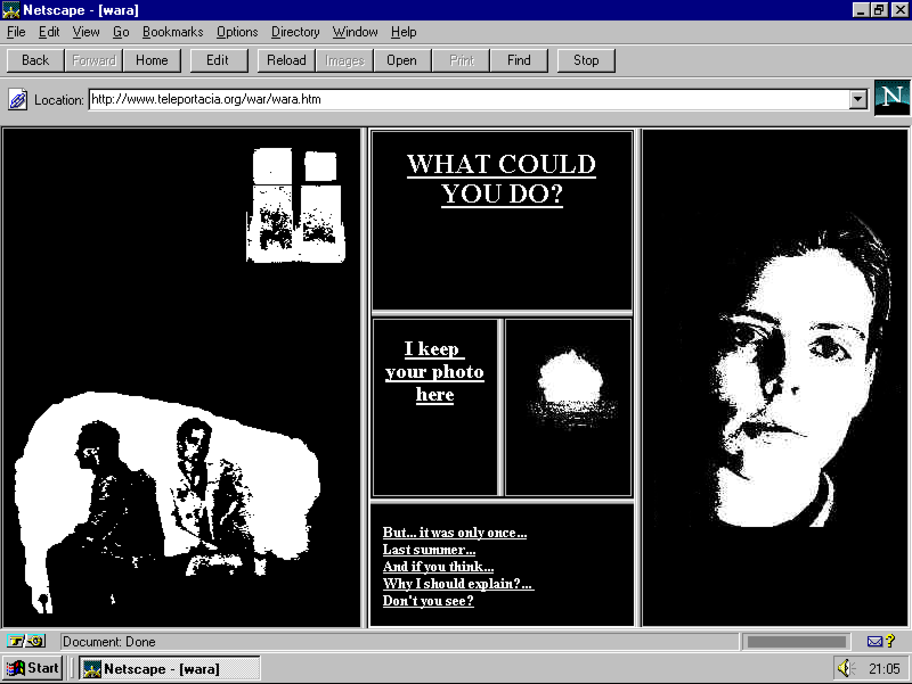
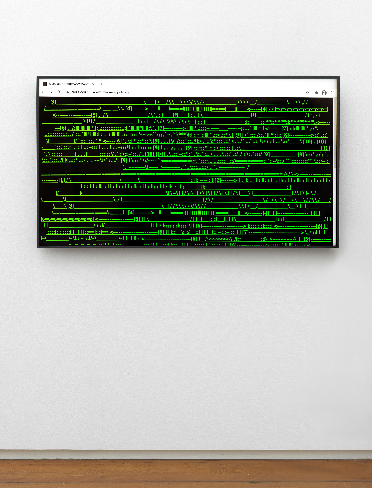
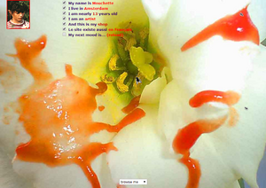

Curatorial Statement
Broken Paths: Net Art and the Unstable Web brings together three important early net artworks from the mid-1990s that all challenge the idea that the internet should be easy, organized, and predictable. Rather than using the web simply as a place to display art, these artists used the structure of the web itself—hyperlinks, browser windows, frames, online identities, and confusing navigation—as the actual material of their work. Each piece reflects a time when the internet was still new and artists were experimenting with what a website could become.
Olia Lialina’s My Boyfriend Came Back from the War uses a series of clickable links and dividing browser frames to tell an emotional and fragmented story. JODI’s wwwwwwwww.jodi.org looks broken on purpose, filling the screen with chaotic images and hidden links in order to make the user feel lost and frustrated. Martine Neddam’s Mouchette imitates a personal website created by a fictional teenage girl, making viewers question what is real and what is fake online.
These works are connected not only because they were created during the same early moment of internet history, but because they all reject the idea that websites should be clear and functional. Instead, they turn the browser into a strange space filled with uncertainty, unstable identity, and unexpected interaction. Together, these works show one of the major goals of early net art: using the internet itself as an artistic medium rather than just a place to put images or information.

My Boyfriend Came Back from the War
This interactive artwork tells a story through text and black-and-white images that split the browser into smaller and smaller frames every time the viewer clicks. The fragmented layout reflects the emotional distance and uncertainty in the story.
View the artworkMore information

wwwwwwwww.jodi.org
JODI’s website appears broken and chaotic, filled with flashing graphics, confusing text, and strange links. The work intentionally makes it difficult to navigate, forcing viewers to think about the hidden systems and code behind the internet.
View the artworkMore information

Mouchette
Mouchette presents itself as the personal website of a teenage girl, but the longer the viewer explores, the stranger and more uncomfortable it becomes. The work examines online identity and how people can create fictional versions of themselves on the internet.
View the artworkMore information